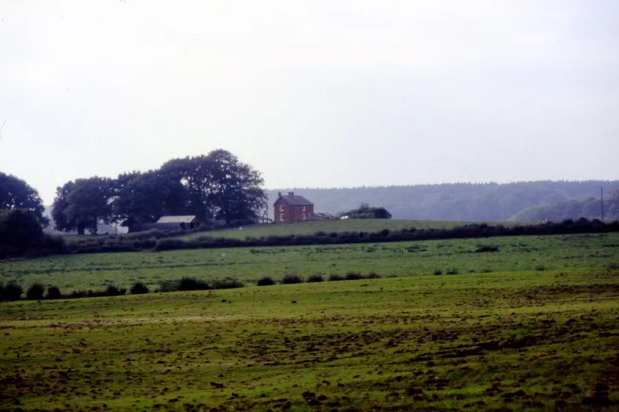
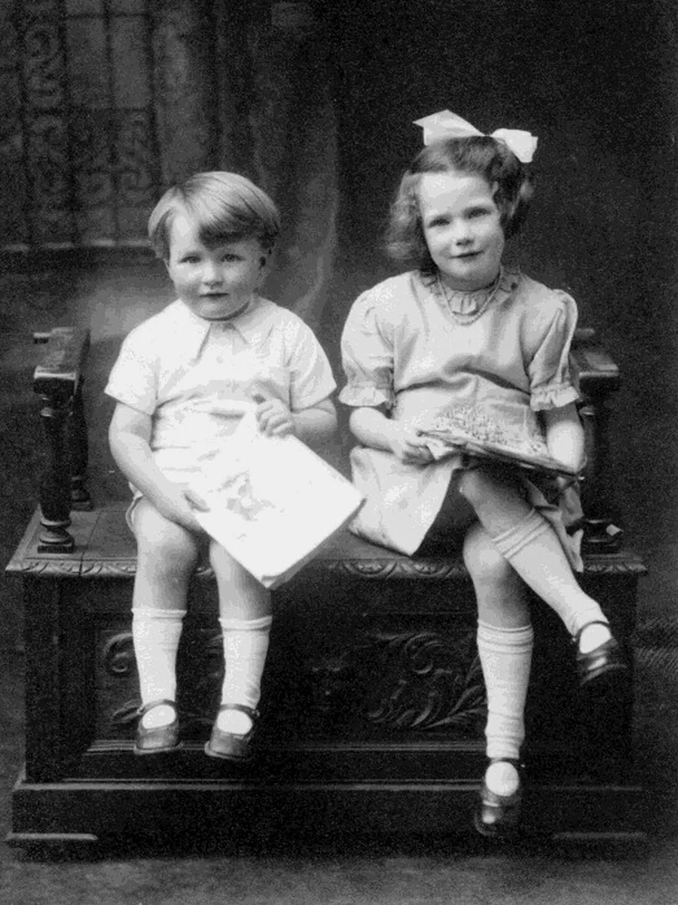
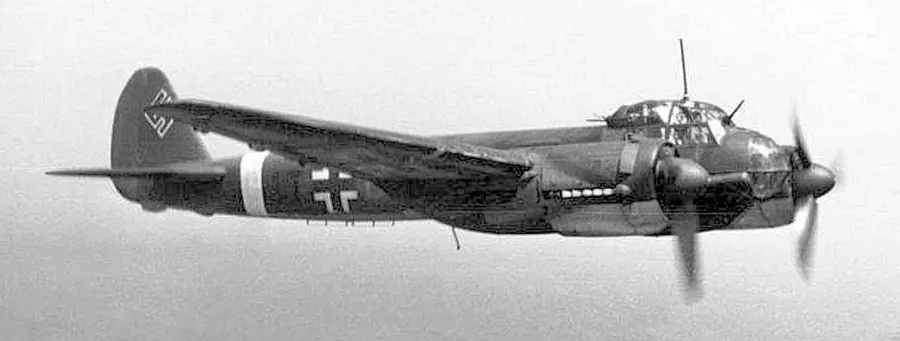
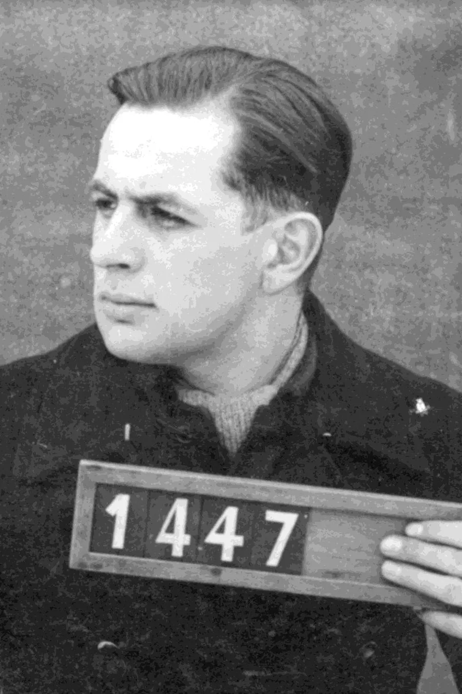
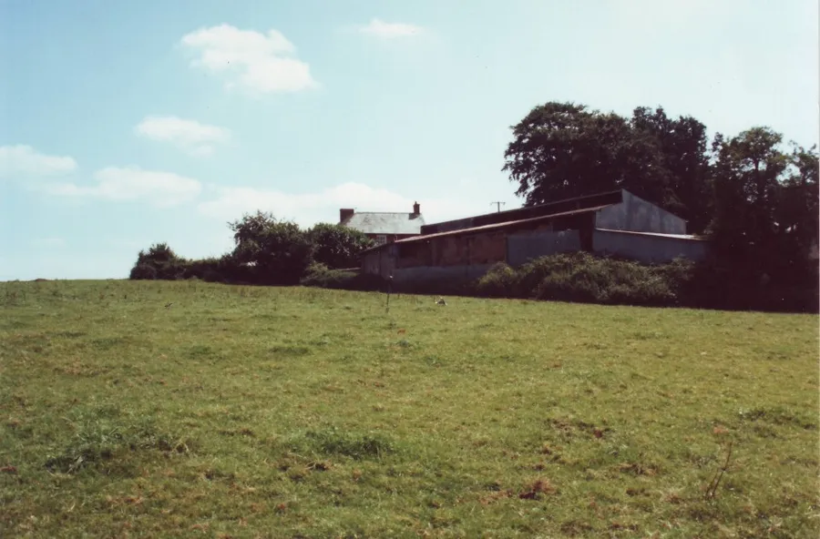

Vale Acre Farm — 1941
by Adrian King

Vale Acre is a farm at the edge of the parish. When you travel from Alderholt to Verwood you turn left into Batterley Drove after passing the Williams Memorial Chapel at Cripplestyle. After about half a mile the farm is on the right at the top of a slight rise.
Occurrences of the name over the years have been
| Vellak[e] | 1314 and 1318 |
| bosc' apud Vellak[e] | 1369 |
| Vellak[e]brech’ | 1382 |
| Fenlak | 1324 |
| Wellake[brech’] | 1382 |
| bosc' domini voc’ Fellake | 1404 |
| Bosc’ de Velacre | 1508 |
| Vellker[e] | 1700s |
| Fell Acre Row | 1846 |
| Velacre | KC1885 |
| KC – Kelly's Cranborne | |
The name probably means ‘fen stream’ from the Old English fenn and lacu. Only relatively recently has the name been reshaped through the V- for F- characteristic of the Dorset dialect. The name refers to a small tributary of the River Crane.
Aram Hibberd was a shopkeeper at Velacre in KC1885.

The farm will be remembered by many for an incident that happened during the Second World War. My mother Mavis remembered it well
“There are some events in our lives that stand out vividly and this is one of them. It was 1941, I was 11 years old and my father was home for the weekend. He worked in the Supermarine factory at Southampton where the Spitfires were built.
"I was lying awake in my bedroom and there was aircraft overhead. We were used to the particular sound of the German bombers as they seemed to be saying you-you-you. I can remember feeling frightened when suddenly the engine became much louder. I went to the window and saw a plane at treetop level passing by and its cockpit was on fire with smoke belching from it.
"I ran into my parent’s bedroom and said 'Daddy, there’s a plane coming down and it’s on fire'. As we looked out of the window we saw it light up the night sky as it crashed at Vale Acre about half a mile away.
"All went quiet and then we heard someone with squeaky boots walking up the road. We heard afterwards that it was one of the airmen. On meeting one of the Home Guard on duty at Cripplestyle crossroads a Mr. Louis Sims he put up his hands and said 'Plise' and he was duly arrested. I’ve often wondered since which one was most frightened. There were five apprehended in all.

"The next day was Sunday and we discovered one of the parachutes hanging from a high hedge just down the road.
"Several days later a crowd of us children went up to the site. Thankfully the plane missed the farmhouse and crashed into a field but still quite close. It must have been terrifying for Mr. and Mrs. Ivan Sims.
"I can still recall the smell of that aircraft; it was a Junkers 88. Although the area was cordoned off and guarded we managed to scrounge some bits. My Father made rings and crosses for Mother and I out of the Perspex collected. My brother found the holster thrown over our hedge several weeks later but the revolver was never found.”

Dennis Bailey remembers that Rev. West the minister of the chapel was the local ARP representative. At church the next day was concerned that he had not known about what had been going on.
It was Dennis who had found the holster in the garden at Hill View and gave it to Mr. Shutler next door. Many years later Mr. Shutler showed Dennis the revolver. Dennis said that he thought that Mr. Shutler had got rid of the revolver down the well between the two properties.
For many years we only had the memories of those who were present and it was passed on with embellishment to their families. Now with the power of the internet the story can be completed.

Luftwaffe Losses and Aircrew Remembered lists that the crash occurred on 9th July 1941. A Junkers Ju 88A-6 Werke/Nr. 3451 Coded 4D + GL belonging to 3 Staffel./Kampfgeschwader 30 was on a mission to attack the Aero Engine works at Moseley in Birmingham.
The plane left St. Andre Normandy at 00.05 am. Soon after crossing the English coast at 13,000 ft. the aircraft was attacked by a night fighter — Flying Officer K. I. Geddes and Sgt. A. C. Cannon were the crew of this Beaufighter of No. 604 Squadron.
The pilot of the Junkers Peter Schönauer writes in his diary
“One year has passed since I went abroad in my Ju 88. The last time from St. Andre I started for an attack on Birmingham. At an altitude of 4000 meters I crossed the English south coast, west of Southampton on my way to Birmingham.
"Just before 01.00 hours my wireless operator saw an aircraft above us flying east-west. I changed direction 10 degrees but after a few minutes I changed course again. I had just finished my turn when I thought I heard machine gun firing and at the same moment the wireless operator shouted 'Nightfighter'
"Immediately I changed course and turned our aircraft upside down. At an altitude of 3000 meters I trimmed the aircraft and saw that my right engine was destroyed completely, oil and coolant is pouring out. I switched off the engine and changed direction back to base. Although the left engine was working without problems I was unable to keep our altitude, also due to the fact we were unable to drop our armour. Anyway we went down quickly."
| The Crew | |
|---|---|
| Pilot | Feldwebel Peter Schönauer |
| Observer | Unteroffizier Hermann Dapper |
| Radio Operator | Obergefreiter Werner Pietsch |
| Gunner | Gefreiter Rudolf Safer |
| All the crew were captured and became POW’s. | |
Peter continued
"I was unable to keep the aircraft on a level course and the aircraft was constantly in a right curve. I ordered the crew to bail out at 600 meters. At 300 meters I left the aircraft from the underside gondola. Almost at the same moment as I had reached the ground our aircraft crashed nearby and started burning immediately.
"I decided to make my way to the aircraft. On arrival I found that British soldiers were already at the scene and they took me as prisoner. Our aircraft had crashed in a garden 10 meters from the house. The remainder of my crew all landed safely and I later saw them in the prison. This happened 12 months ago, I am not yet home. When will that be? Here, no-one can answer that question.”
Peter Schönauer. 8th July 1942, Monteith, Ontario, Canada.
The Military Police arrived quickly and a report of the incident was out within a couple of days. It said that most of the wreckage had been buried during the crash and what had remained above ground had been “Covered in by the local Home Guard to presumably put the fire out.” The engines had been completely buried.
The external Bomb Rack had been fitted with an explosive jettison device and the 2 x 500 kilo bombs had been jettisoned after the aircraft had been attacked.

Compiled from information supplied by Mavis King, Dennis Bailey, Melvin Brownless, Mike Croft and Colin Fuller.